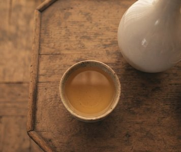
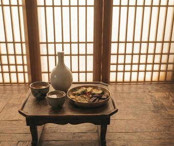

KNOWING OUR SOOL
수블에서 술까지,
이름이 걸어온 길
우리술의 이름과 발자취,
즐기는 방법을 살펴봅니다.
WORD
술이라는 말
술을 뜻하는 한자 유(酉)는 술을 담는
항아리 모양에서 나온 글자입니다.
- 수블
- 수울
- 수을
- 술
ERA
시대를 지나온 우리술
ENJOY
우리술 즐기기
보고, 맡고, 맛보는 세 단계
-

STEP 01 눈으로 보기잔에 3분의 2쯤 채워 맑기와 황금빛 색을 봅니다.
-
STEP 02 냄새 맡기
누룩향 위로 과실향과 꽃향이 얹힙니다.
-

STEP 03 맛보기여섯 가지 맛이 어우러진 것이 좋은 약주입니다.